Edenlandia

Il primo lunapark del Sud Italia
Edenlandia è il primo lunapark del Sud Italia che, grazie alla sua storia, ha conquistato il cuore di Napoli. Una parte di storia della città che ha intrattenuto intere generazioni e che riapre le porte al pubblico ufficialmente nel 2018.
Un parco che la città aveva dimenticato
Il parco subisce tanti cambiamenti nel tempo e non acquisisce una buona reputazione, per cui i cittadini ne dimenticano l’esistenza. Con la nuova gestione e un reparto interno di marketing nasce la necessità di comunicare il parco per ripopolarlo di ragazzi e famiglie.
Cosa manca alle persone?
Più che concentrarci sulle caratteristiche del parco, ci siamo chiesti cosa mancasse alle persone. Lì abbiamo trovato il vero punto di forza:
“Un luogo magico, dove creare nuovi ricordi, vivere momenti di spensieratezza e poter tornare bambini.”
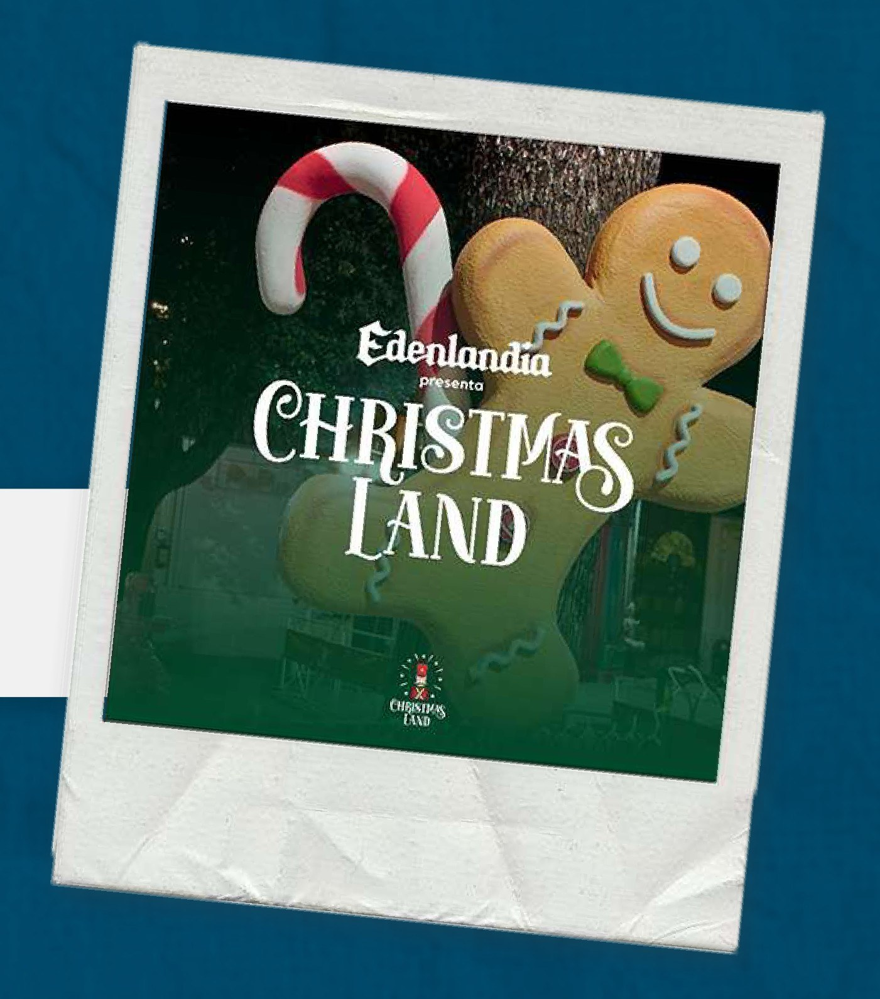
Christmas Land
L’intervento è arrivato in prossimità di Natale, per lanciare l’iniziativa “Christmas Land”: il parco allestito come un vero villaggio di Babbo Natale.
Attraverso un’accurata attività di comunicazione e storytelling nelle stories abbiamo creato coinvolgimento con il pubblico: le storie sono state fondamentali per migliorare l’immagine del parco e trasmettere i messaggi principali, a partire dalla pista di pattinaggio.
Le stories
9 esempiOgni storia è stata progettata per seguire un flusso preciso, che portasse chi guarda oltre le singole giostre e attività del parco.
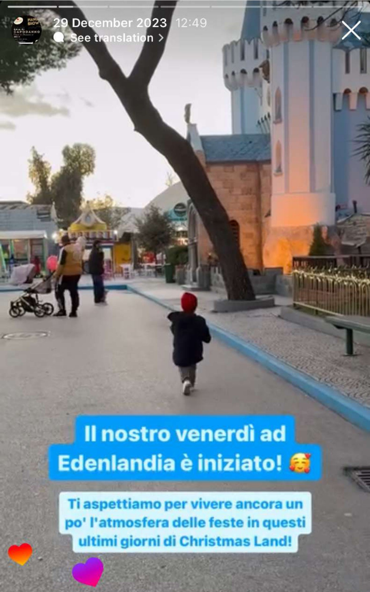
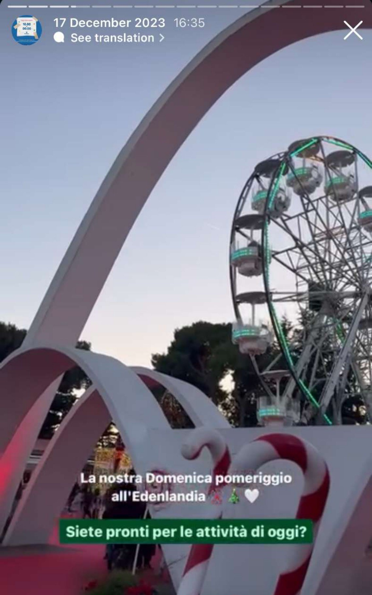
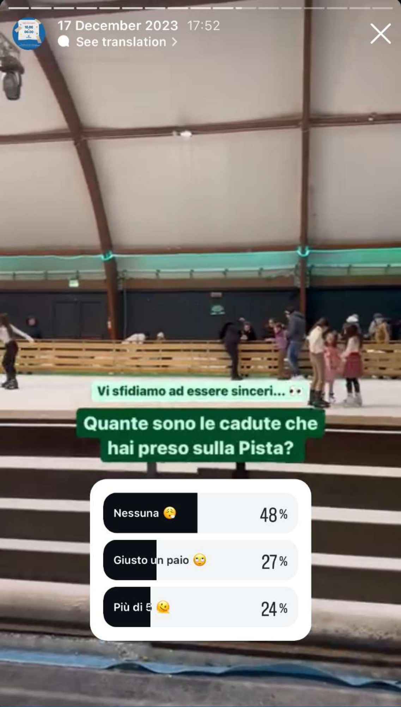

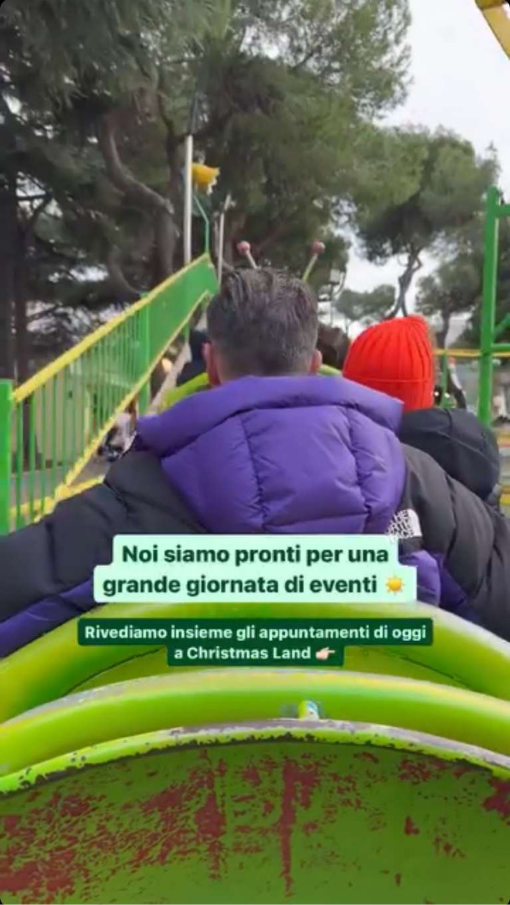
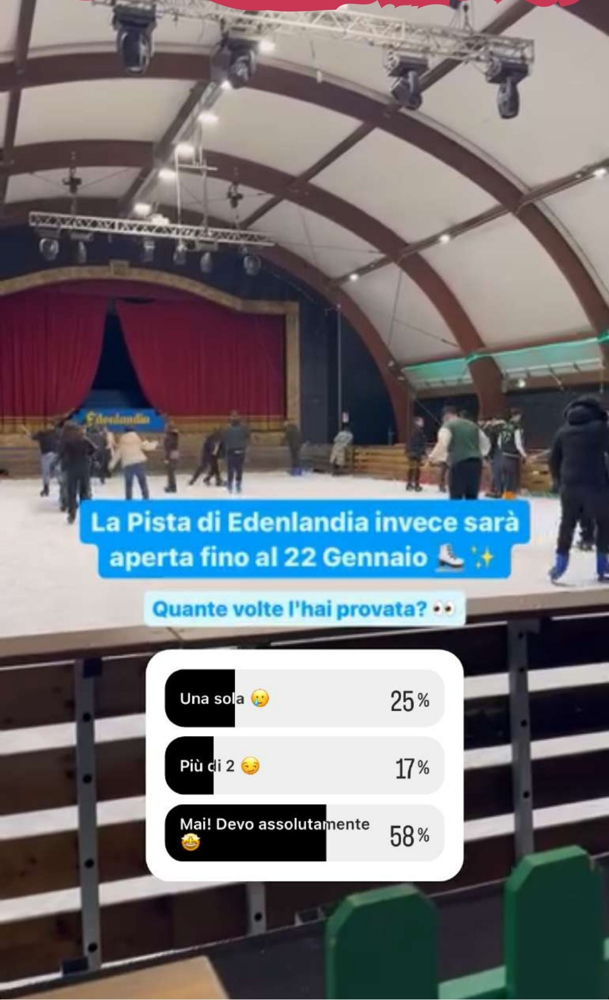
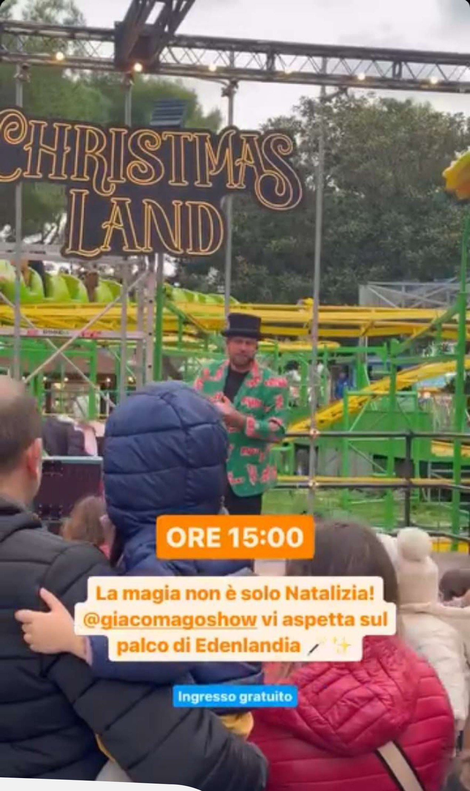
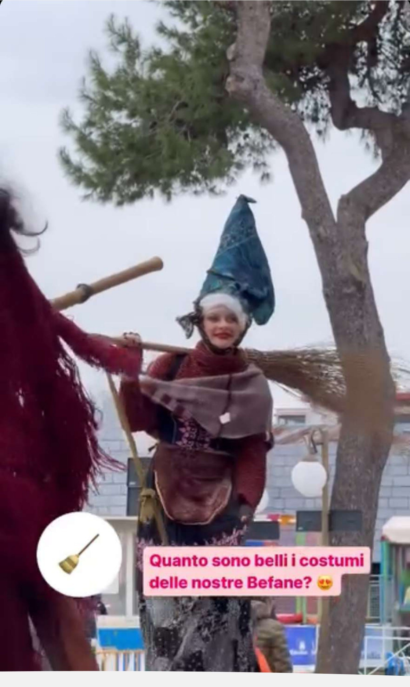
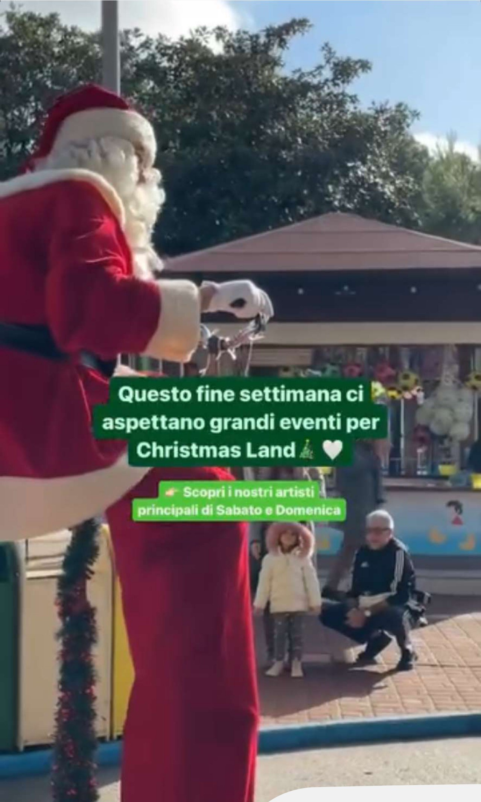
Il risultato
Dicembre 2023Il racconto nelle stories ha portato più persone agli eventi di Christmas Land e un aumento delle richieste di informazioni in direct. Gli eventi sono stati raccontati anche con shooting dedicati.
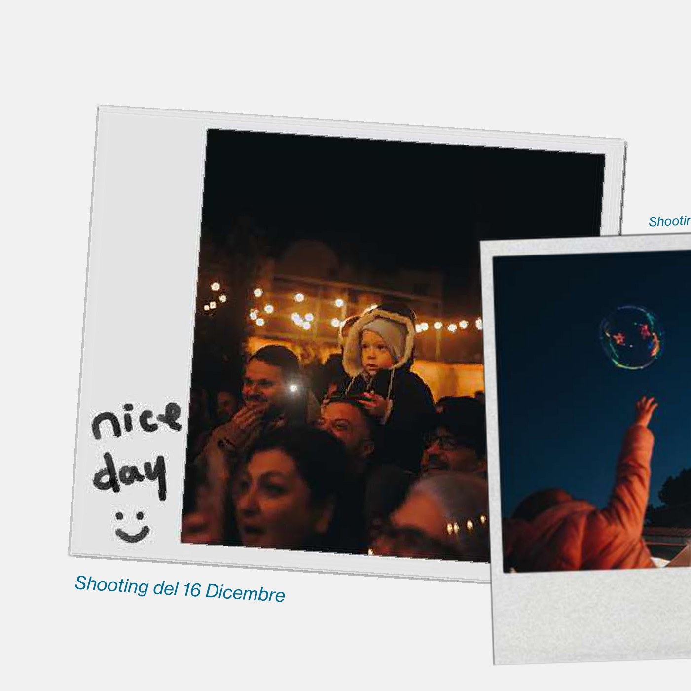
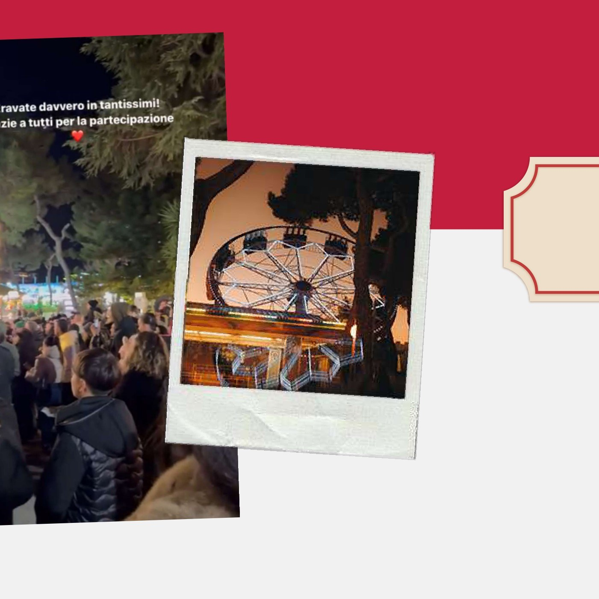
 Next project
Lounge bar · PorticiLe CabineProgetto completo
Next project
Lounge bar · PorticiLe CabineProgetto completo